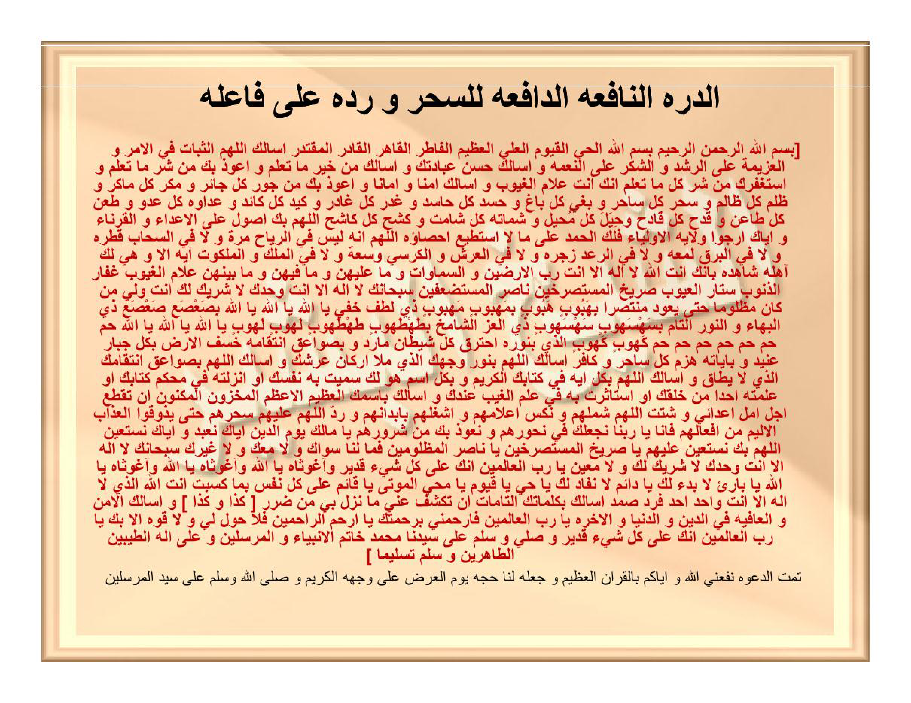

HALAMAN 38 — AD-DURRATUN-NĀFI'ATUD-DĀFI'ATU LIS-SIHRI WA RADDIHĪ (2/2) — الدُّرَّةُ النَّافِعَةُ الدَّافِعَةُ لِلسِّحْرِ وَرَدِّهِ عَلَى فَاعِلِهِ
arab
latin
Ad-durratun-nāfi'atud-dāfi'atu lis-sihri wa raddihī 'alā fā'ilihī.
[ Bismillāhir-rahmānir-rahīmi bismillāhil-Hayyil-Qayyūmil-'Aliyyil-'Azhīmil-Fāthiril-Qāhiril-Qādiril-Muqtadiri as'alukallāhummaths-tsabāta fil-amri wal-'azīmata 'alar-rusydi wasy-syukra 'alan-ni'mati wa as'aluka husna 'ibādatika wa as'aluka min khairi mā ta'lamu wa a'ūdzu bika min syarri mā ta'lamu wa astaghfiruka min syarri kulli mā ta'lamu innaka anta 'allāmul-ghuyūbi wa as'aluka amnan wa amānan wa a'ūdzu bika min jauri kulli jā'irin wa makri kulli mākirin wa zhulmi kulli zhālimin wa sihri kulli sāhirin wa baghyi kulli bāghin wa hasadi kulli hāsidin wa ghadri kulli ghādirin wa kaidi kulli kā'idin wa 'adāwati kulli 'aduwwin wa tha'ni kulli thā'inin wa qadhi kulli qādihin wa hiyali kulli muhīlin wa syamātati kulli syāmitin wa kasyhi kulli kāsyihin Allāhumma bika ashūlu 'alal-a'dā'i wal-quranā'i wa iyyāka arjū wilāyatal-auliyā'i falakal-hamdu 'alā mā lā astathī'u ihshā'ahū Allāhumma innahū laisa fir-riyāhi marratun wa lā fis-sahābi qathratun wa lā fil-barqi lam'atun wa lā fir-ra'di zajratun wa lā fil-'arsyi wal-kursiyyi was'atun wa lā fil-mulki wal-malakūti āyatun illā wa hiya laka āhilatun syāhidatun bi-annaka antallāhu lā ilāha illā anta Rabbul-aradhīna was-samāwāti wa mā 'alaihinna wa mā fīhinna wa mā bainahunna 'allāmul-ghuyūbi ghaffārudz-dzunūbi sattārul-'uyūbi sharīkhul-mustashrikhīna nāshirul-mustadh'afīna subhānaka lā ilāha illā anta wahdaka lā syarīka laka anta waliyyu man kāna mazhlūman hattā ya'ūda muntashiran bihabūbin habūbin bimahbūbin mahbūbin dzī luthfin khafiyyin yā Allāhu yā Allāhu yā Allāhu bisha'sha'in sha'sha'in dzil-bahā'i wan-nūrit-tāmmi bisahsahūbin sahsahūbin dzil-'izzisy-syāmikhi bithahthahūbin thahthahūbin lahūbin lahūbin yā Allāhu yā Allāhu yā Allāhu Hā-Mīm Hā-Mīm Hā-Mīm Hā-Mīm Hā-Mīm Hā-Mīm Hā-Mīm kahūbin kahūbin alladzī binūrihi-htaraqa kullu syaithānin māridin wa bishawā'iqi-ntiqāmihī khasafal-ardha bikulli jabbārin 'anīdin wa bi-āyātihī hazama kulla sāhirin wa kāfirin as'alukallāhumma binūri wajhikal-ladzī mala'a arkāna 'arsyika wa as'alukallāhumma bishawā'iqi-ntiqāmikal-ladzī lā yuthāqu wa as'alukallāhumma bikulli āyatin fī kitābikal-karīmi wa bikulli-smin huwa laka sammaita bihī nafsaka au anzaltahū fī muhkami kitābika au 'allamtahū ahadan min khalqika awi-sta'tsarta bihī fī 'ilmil-ghaibi 'indaka wa as'aluka bismikal-'azhīmil-a'zhamil-makhzūnil-maknūni an taqtha'a ajala amali a'dā'ī wa syattitillāhumma syamlahum wa nakkis a'lāmahum wasyghalhum bi-abdānihim wa ruddallāhumma 'alaihim sihrahum hattā yadzūqul-'adzābal-alīma min af'ālihim fa-innā yā rabbanā naj'aluka fī nuhūrihim wa na'ūdzu bika min syurūrihim yā Mālika yaumid-dīni iyyāka na'budu wa iyyāka nasta'īnu Allāhumma bika nasta'īnu 'alaihim yā sharīkhal-mustashrikhīna yā nāshiral-mazhlūmīna famā lanā siwāka wa lā ma'aka wa lā ghairuka subhānaka lā ilāha illā anta wahdaka lā syarīka laka wa lā mu'īna yā Rabbal-'ālamīna innaka 'alā kulli syai'in qadīrun wā ghautsāhu yā Allāhu wā ghautsāhu yā Allāhu wā ghautsāhu yā Allāhu yā Bāri'u lā bad'a laka yā Dā'imu lā nafāda laka yā Hayyu yā Qayyūmu yā Muhyiyal-mautā yā Qā'imun 'alā kulli nafsin bimā kasabat antallāhul-ladzī lā ilāha illā anta Wāhidun Ahadun Fardun Shamadun as'aluka bikalimātikat-tāmmāti an taksyifa 'annī mā nazala bī min dhararin [ kadzā wa kadzā ] wa as'alukal-amna wal-'āfiyata fid-dīni wad-dunyā wal-ākhirati yā Rabbal-'ālamīna farhamnī birahmatika yā Arhamar-rāhimīna falā haula lī wa lā quwwata illā bika yā Rabbal-'ālamīna innaka 'alā kulli syai'in qadīrun wa shalli wa sallim 'alā sayyidinā Muhammadin khātamil-anbiyā'i wal-mursalīna wa 'alā ālihith-thayyibīnath-thāhirīna wa sallim taslīman ]
Tammatid-da'watu nafa'aniyallāhu wa iyyākum bil-Qur'ānil-'azhīmi wa ja'alahū lanā hujjatan yaumal-'ardhi 'alā wajhihil-karīmi wa shallallāhu wa sallama 'alā sayyidil-mursalīna.
Terjemahan
Mutiara yang bermanfaat lagi menolak sihir serta mengembalikannya kepada pelakunya.
[ Dengan menyebut nama Allah Yang Maha Pengasih lagi Maha Penyayang. Dengan menyebut nama Allah Yang Maha Hidup, Yang Maha Berdiri Sendiri mengurus makhluk-Nya, Yang Maha Tinggi, Yang Maha Agung, Pencipta, Yang Maha Menundukkan, Yang Maha Kuasa, lagi Yang Maha Memegang kekuasaan mutlak. Aku memohon kepada-Mu, ya Allah, keteguhan dalam urusan, tekad yang bulat di atas petunjuk kebenaran, dan rasa syukur atas nikmat; aku memohon kepada-Mu kebaikan dalam beribadah kepada-Mu; aku memohon kepada-Mu dari kebaikan apa yang Engkau ketahui; aku berlindung kepada-Mu dari kejahatan apa yang Engkau ketahui; dan aku memohon ampun kepada-Mu dari kejahatan segala apa yang Engkau ketahui; sesungguhnya Engkau adalah Dzat Yang Maha Mengetahui segala yang gaib. Dan aku memohon kepada-Mu rasa aman dan keselamatan; serta aku berlindung kepada-Mu dari kelaliman setiap orang yang bertindak sewenang-wenang, tipu daya setiap pembuat makar, kezaliman setiap orang yang zalim, sihir setiap penyihir, keangkuhan melampaui batas dari setiap pelanggar, kedengkian setiap pendengki, pengkhianatan setiap pengkhianat, muslihat jahat setiap pembuat tipu daya, permusuhan setiap musuh, tikaman celaan setiap pencela, hujatan setiap penghujat, akal bulus setiap perekayasa, kegembiraan di atas penderitaan dari setiap orang yang senang melihat musibah orang lain, serta dendam tersembunyi dari setiap pemendam permusuhan. Ya Allah, dengan-Mu aku menerjang para musuh dan para qarin (pendamping buruk), dan hanya kepada-Mu aku mengharapkan perwalian para wali; maka bagi-Mu segala puji atas nikmat yang tidak mampu aku hitung. Ya Allah, sesungguhnya tidak ada satu hembusan pun pada angin, tidak ada satu tetes pun pada awan, tidak ada satu kilatan pun pada kilat, tidak ada satu bentakan gemuruh pun pada guntur, tidak ada satu keluasan pun pada 'Arsy dan Kursi, serta tidak ada satu tanda kekuasaan pun di alam mulk (nyata) dan malakut (gaib), melainkan semuanya tunduk menjadi saksi bagi-Mu bahwa Engkaulah Allah, tidak ada tuhan yang berhak disembah selain Engkau, Tuhan tujuh lapis bumi dan langit beserta segala yang ada di atasnya, yang ada di dalamnya, dan yang ada di antara semuanya; Yang Maha Mengetahui segala yang gaib, Yang Maha Pengampun dosa-dosa, Yang Maha Penutup aib-aib, Penolong bagi orang-orang yang berteriak meminta pertolongan, dan Pembela bagi orang-orang yang tertindas. Mahasuci Engkau, tidak ada tuhan selain Engkau semata, tidak ada sekutu bagi-Mu; Engkaulah Pelindung bagi siapa saja yang dizalimi hingga ia kembali meraih kemenangan; dengan hak Habūbin Habūbin, dengan Mahbūbin Mahbūbin pemilik kelembutan yang tersembunyi, wahai Allah, wahai Allah, wahai Allah; dengan Sha'sha'in Sha'sha'in pemilik keagungan keindahan dan cahaya yang sempurna; dengan Sahsahūbin Sahsahūbin pemilik kemuliaan yang menjulang tinggi; dengan Thahthahūbin Thahthahūbin Lahūbin Lahūbin, wahai Allah, wahai Allah, wahai Allah; Hā-Mīm, Hā-Mīm, Hā-Mīm, Hā-Mīm, Hā-Mīm, Hā-Mīm, Hā-Mīm; Kahūbin Kahūbin, Dzat yang dengan cahaya-Nya terbakar hangus setiap setan yang membangkang, dengan petir-petir pembalasan-Nya membenamkan bumi atas setiap penguasa sombong lagi keras kepala, dan dengan ayat-ayat-Nya mengalahkan setiap penyihir dan orang kafir. Aku memohon kepada-Mu ya Allah dengan cahaya Wajah-Mu yang memenuhi tiang-tiang 'Arsy-Mu, aku memohon kepada-Mu ya Allah dengan petir-petir pembalasan-Mu yang tidak sanggup ditahan, dan aku memohon kepada-Mu ya Allah dengan setiap ayat di dalam Kitab-Mu yang mulia, dan dengan setiap Nama milik-Mu yang Engkau namakan diri-Mu dengannya, atau yang Engkau turunkan di dalam Kitab-Mu yang muhkam, atau yang Engkau ajarkan kepada salah seorang dari makhluk-Mu, atau yang Engkau khususkan penyimpanannya dalam ilmu gaib di sisi-Mu; serta aku memohon kepada-Mu dengan Nama-Mu Yang Maha Agung lagi Paling Agung (al-Ismul-'Azhīmul-A'zham) yang tersimpan lagi terjaga rapat, agar Engkau memutuskan batas harapan musuh-musuhku; cerai-beraikanlah ya Allah persatuan mereka, jungkir-balikkanlah bendera-bendera mereka, sibukkanlah mereka dengan penyakit pada tubuh-tubuh mereka sendiri, dan kembalikanlah ya Allah kepada mereka sihir mereka sendiri hingga mereka merasakan azab yang pedih akibat perbuatan-perbuatan mereka! Sesungguhnya kami, wahai Tuhan kami, menjadikan Engkau di hadapan leher-leher mereka dan kami berlindung kepada-Mu dari kejahatan-kejahatan mereka; wahai Penguasa Hari Pembalasan, hanya kepada-Mu kami menyembah dan hanya kepada-Mu kami memohon pertolongan. Ya Allah, hanya kepada-Mu kami memohon pertolongan dalam menghadapi mereka, wahai Penolong orang-orang yang menjerit meminta pertolongan, wahai Pembela orang-orang yang dizalimi; maka tidak ada bagi kami penolong selain-Mu, tidak ada yang menyertai-Mu, dan tidak ada tuhan selain-Mu; Mahasuci Engkau, tidak ada tuhan selain Engkau semata, tidak ada sekutu bagi-Mu dan tidak ada pembantu bagi-Mu, wahai Tuhan semesta alam; sesungguhnya Engkau Maha Kuasa atas segala sesuatu. Wahai pertolongan, ya Allah! Wahai pertolongan, ya Allah! Wahai pertolongan, ya Allah! Wahai Sang Pencipta yang tiada permulaan bagi-Mu, wahai Yang Maha Kekal yang tiada habis bagi-Mu, wahai Yang Maha Hidup, wahai Yang Maha Berdiri Sendiri, wahai Yang Menghidupkan orang-orang mati, wahai Yang Mengawasi setiap jiwa atas apa yang diperbuatnya; Engkaulah Allah yang tiada tuhan selain Engkau, Yang Maha Esa, Maha Tunggal, Maha Sendiri, lagi Tempat bergantung segala makhluk; aku memohon kepada-Mu dengan kalimat-kalimat-Mu yang sempurna agar Engkau menyingkapkan (menghilangkan) dariku bahaya yang turun menimpaku berupa [ sebutkan bentuk bahaya/sihir yang dialami ], dan aku memohon kepada-Mu keamanan serta afiat dalam urusan agama, dunia, dan akhirat, wahai Tuhan semesta alam; maka rahmatilah aku dengan rahmat-Mu, wahai Dzat Yang Paling Penyayang di antara para penyayang; karena tiada daya bagiku dan tiada kekuatan melainkan dengan pertolongan-Mu, wahai Tuhan semesta alam; sesungguhnya Engkau Maha Kuasa atas segala sesuatu. Dan limpahkanlah shalawat serta salam atas junjungan kita Muhammad, penutup para nabi dan rasul, beserta keluarga beliau yang baik lagi suci, dan limpahkanlah keselamatan yang sebenar-benarnya ].
Selesailah doa tersebut. Semoga Allah memberikan manfaat kepadaku dan kepada kalian dengan Al-Qur'an yang agung, serta menjadikannya hujjah (pembela) bagi kita pada hari penghadapan di hadapan Wajah-Nya Yang Mulia; dan semoga Allah melimpahkan shalawat serta salam atas penghulu para rasul.
Syarah dan Penjelasan
- Pada draf kiriman sebelumnya, bagian `Terjemahan` dipangkas sangat banyak (14 rincian perlindungan dari kejahatan musuh dipotong tinggal 5, bagian tawassul dengan seluruh ayat dan Asma Allah dalam ilmu gaib dipotong seluruhnya, serta bagian akhir doa dipersingkat), dan baris penutup `تَمَّتِ الدَّعْوَةُ نَفَعَنِي اللهُ وَإِيَّاكُمْ...` hilang di bagian `latin` dan `Terjemahan`. Kini seluruhnya telah diterjemahkan dan dilatinkan **100% lengkap kata demi kata**.
- Koreksi ejaan & nahwu:
- `وَاغَوْثَاهُ يَا اللهُ` adalah *uslūb nudbah/istighātsah* (*Wā ghautsāhu yā Allāhu* = "Wahai pertolongan, ya Allah!", bukan *Wa aghautsāhu*).
- `وَحِيَلِ كُلِّ مُحِيلٍ` (*wa hiyali kulli muhīlin* = akal bulus setiap perekayasa tipu daya), `وَكَشْحِ كُلِّ كَاشِحٍ` (*wa kasyhi kulli kāsyihin* = dendam tersembunyi setiap pemendam permusuhan), dan `سِحْرَهُمْ` (*sihrahum*).
2. **Tiga Poros Kekuatan *Ad-Durratun-Nāfi'ah***:
- **Poros Pertama (14 *Isti'ādzah* Berlapis)**: Memagari pengamal dari segala bentuk serangan lahir maupun batin: *jaur* (kelaliman penguasa), *makr* (tipu daya halus), *zhulm* (kezaliman), *sihr* (sihir), *baghy* (تعدي/melampaui batas), *hasad* (dengki), *ghadr* (pengkhianatan), *kaid* (muslihat), *'adāwah* (permusuhan), *tha'n* (tikaman fitnah), *qadh* (pencemaran nama baik), *hiyal* (rekayasa), *syamātah* (sorak-sorai musuh atas musibah), dan *kasyh* (kebencian yang dipendam di dalam dada).
- **Poros Kedua (Asma *Jalāliyyah* & Tujuh *Hā-Mīm*)**: Rangkaian asma *Habūb, Mahbūb, Sha'sha' (Dzul-Bahā' wan-Nūrit-Tāmm), Sahsahūb (Dzul-'Izzisy-Syāmikh), Thahthahūb, Lahūb, Kahūb* yang dipadukan dengan tujuh *Hā-Mīm* (`حم` × 7 — isyarat kepada tujuh Surah *Al-Hawāmīm* dalam Al-Qur'an: Ghāfir, Fushshilat, asy-Syūrā, az-Zukhruf, ad-Dukhān, al-Jātsiyah, al-Ahqāf) merupakan benteng api nurani yang membakar setan pembangkang (*syaithān mārid*) dan mematahkan kekuatan tukang sihir.
- **Poros Ketiga (Inti *Raddus-Sihr*)**: Kalimat `وَاشْغَلْهُمْ بِأَبْدَانِهِمْ وَرُدَّ اللَّهُمَّ عَلَيْهِمْ سِحْرَهُمْ حَتَّى يَذُوقُوا الْعَذَابَ الْأَلِيمَ مِنْ أَفْعَالِهِمْ` memohon kepada Allah agar kesibukan penyihir berbalik kepada penyakit tubuhnya sendiri dan racun sihirnya kembali mengenai dirinya.
Khususiyah dan Tatacara Praktik
- Doa pada Halaman 38 ini adalah teks lengkap dari *Ad-Durratun-Nāfi'ah* yang kaidah pengamalannya telah dijelaskan pada Halaman 37: dikerjakan setelah shalat Maghrib, diawali shalat sunnah 2 rakaat di tempat tersendiri (*mu'tazilan wahdahū*), menyalakan bukhur *lubān dzakar*, lalu membaca doa ini sebanyak **7 kali**.
2. **Pengisian Hajat pada Lafaz `[ كَذَا وَكَذَا ]`**:
- Ketika bacaan sampai pada kalimat `أَنْ تَكْشِفَ عَنِّي مَا نَزَلَ بِي مِنْ ضَرَرٍ [ كَذَا وَكَذَا ]`, kata `كَذَا وَكَذَا` diganti dengan menyebutkan secara spesifik gangguan sihir, penyakit, atau mudarat yang sedang menimpa diri atau keluarga pengamal.

HALAMAN 39 — DA'WATUT-TASKHĪRI NAS'ALULLĀHAL-IJĀBATA — دَعْوَةُ التَّسْخِيرِ نَسْأَلُ اللهَ الْإِجَابَةَ
arab
latin
Da'watut-taskhīri nas'alullāhal-ijābata.
As-salāmu 'alaikum wa rahmatullāhi wa barakātuhū.
Hādzihī da'watut-taskhīri tutlā marratan wāhidatan qabla kulli 'amalin:
( Allāhumma yā Musakhkhiras-samāwātis-sab'i wal-aradhīnas-sab'i wa man fīhinna wa man 'alaihinna sakhkhir lī kulla 'ibādika mimmā fī barrika wa bahrika yā Rabbal-'ālamīna hattā lā yakūna fil-kauni syai'un mutaharrikun au sākinun nāthiqun au shāmitun zhāhirun au bāthinun illā sakhkhartahū lī wa yakūna thau'a amrī bibarakatismikal-makhzūnil-maknūni yā Allāhu yā Hayyu yā Qayyūmu innamā amruhū idzā arāda syai'an an yaqūla lahū kun fayakūnu. Ilāhī jūduka dallanī 'alaika wa ihsānuka qarrabanī ilaika asykū ilaika mā lā yakhfā 'alaika wa as'aluka mā lā ya'suru 'alaika idz 'ilmuka bihālī yughnī 'an su'ālī yā Mufarrijan 'an kulli makrūbin karbahū wa munjiyahū farrij 'annī karbī wa mā anā fīhi yā man laisa bighā'ibin fa-antazhirahū wa lā binā'imin fa-ūqizhahū wa lā bighāfilin fa-unabbihahū wa lā bināsin fa-udzakkirahū wa lā bi'ājizin fa-umhilahū yā 'Āliman bil-jumlati wa Ghaniyyan 'anit-tafshīli wa yā Sāmi'an lil-qā'ili wal-qīli kafā 'ilmuka 'anil-maqāli wanqatha'ar-rajā'u illā minka yā Muta'āli wa khābatil-āmālu illā fīka yā Dzal-jalāli wal-ikrāmi wa suddatith-thuruqu illā ilaika yā Mifdhālu yā Allāhu yā Samī'u yā Mujību yā Qarību ighfir lī warhamnī birahmatikal-latī wasi'ta bihā kulla syai'in wa yassir lī amrī wa sakhkhir lī jamī'a khalqika minal-arwāhir-rūhāniyyati innaka 'alā kulli syai'in qadīrun falakal-'izzatu wal-qahru wa biyadikal-khalqu wal-amru wa lā haula wa lā quwwata illā bika yā Qawiyyu yā Qahhāru yā Qarību yā Mujībad-du'ā'i. )
Waffaqakumullāhu limā fīhil-khairu innahū 'alā kulli syai'in qadīrun.
Terjemahan
Doa Taskhīr (penundukan), kami memohon kepada Allah pengabulannya.
Assalamu'alaikum warahmatullahi wabarakatuh.
Inilah Doa Taskhīr yang dibaca satu kali sebelum setiap amalan:
( Ya Allah, wahai Dzat Yang Menundukkan tujuh lapis langit dan tujuh lapis bumi beserta siapa saja yang berada di dalamnya dan di atasnya, tundukkanlah bagiku seluruh hamba-Mu dari apa yang ada di daratan-Mu dan di lautan-Mu, wahai Tuhan semesta alam; sehingga tidak ada sesuatu pun di alam semesta ini, baik yang bergerak maupun yang diam, yang berbicara maupun yang bisu, yang tampak lahir maupun yang tersembunyi batin, melainkan Engkau telah menundukkannya bagiku dan menjadikannya patuh pada urusanku dengan keberkahan Nama-Mu yang tersimpan lagi terjaga rapat; wahai Allah, wahai Yang Maha Hidup, wahai Yang Maha Berdiri Sendiri mengurus makhluk-Nya; Sesungguhnya urusan-Nya apabila Dia menghendaki sesuatu hanyalah berkata kepadanya: “Jadilah!” maka terjadilah ia — QS. Yāsīn: 82. Tuhanku, kemurahan-Mu telah menunjukiku kepada-Mu, dan kebaikan-Mu telah mendekatkanku kepada-Mu; aku mengadukan kepada-Mu apa yang tidak tersembunyi bagi-Mu, dan aku memohon kepada-Mu apa yang tidak sulit bagi-Mu, karena sesungguhnya pengetahuan-Mu tentang keadaanku telah mencukupkan aku dari permintaanku. Wahai Dzat Yang Melapangkan kesusahan dari setiap orang yang dirundung duka serta menyelamatkannya, lapangkanlah dariku kesusahanku dan apa yang sedang aku alami; wahai Dzat yang tidak pernah gaib (tidak hadir) sehingga aku harus menunggu-Nya, tidak pernah tidur sehingga aku harus membangunkan-Nya, tidak pernah lalai sehingga aku harus menyadarkan-Nya, tidak pernah lupa sehingga aku harus mengingatkan-Nya, dan tidak pernah lemah sehingga aku harus memberi-Nya tangguh; wahai Dzat Yang Maha Mengetahui secara keseluruhan dan tidak membutuhkan perincian, wahai Dzat Yang Maha Mendengar orang yang berkata maupun perkataan yang diucapkan; cukuplah ilmu-Mu tanpa perlu untaian kata-kata, telah terputus segala harapan kecuali dari-Mu wahai Yang Maha Tinggi, telah hampa segala cita-cita kecuali kepada-Mu wahai Pemilik Keagungan dan Kemuliaan, dan telah tertutup seluruh jalan kecuali menuju kepada-Mu wahai Yang Maha Melimpahkan karunia. Wahai Allah, wahai Yang Maha Mendengar, wahai Yang Maha Mengabulkan, wahai Yang Maha Dekat; ampunilah aku dan rahmatilah aku dengan rahmat-Mu yang dengannya Engkau meliputi segala sesuatu, mudahkanlah bagiku urusanku, dan tundukkanlah bagiku seluruh makhluk-Mu dari kalangan ruh-ruh ruhaniyyah; sesungguhnya Engkau Maha Kuasa atas segala sesuatu. Maka hanya milik-Mu kemuliaan dan keperkasaan penundukan, di tangan-Mu segala penciptaan dan perintah, serta tiada daya dan tiada kekuatan melainkan dengan pertolongan-Mu, wahai Yang Maha Kuat, wahai Yang Maha Menundukkan, wahai Yang Maha Dekat, wahai Yang Maha Mengabulkan doa ).
Semoga Allah memberikan taufik kepada kalian menuju apa yang di dalamnya terdapat kebaikan; sesungguhnya Dia Maha Kuasa atas segala sesuatu.
Syarah dan Penjelasan
- Pada draf kiriman tertulis *Da'watut-tasghīri* (dengan *gh* = تَصْغِير), padahal di scan asli tertulis jelas **`دَعْوَةُ التَّسْخِيرِ`** (*Da'watut-taskhīri* dengan huruf *kh* `خ` = Doa Penundukan).
- Selain itu, pada bagian `Terjemahan` draf terdapat 6 potong kalimat doa yang hilang/tidak diterjemahkan (antara lain `وَأَسْأَلُكَ مَا لَا يَعْسُرُ عَلَيْكَ`, `يَا مُفَرِّجًا عَنْ كُلِّ مَكْرُوبٍ...`, `وَلَا بِنَاسٍ فَأُذَكِّرَهُ`, `يَا عَالِمًا بِالْجُمْلَةِ... يَا مِفْضَالُ`, serta penutup `فَلَكَ الْعِزَّةُ وَالْقَهْرُ... يَا مُجِيبَ الدُّعَاءِ`). Kini seluruhnya telah diterjemahkan **100% utuh kata demi kata**.
- Koreksi lafaz sesuai scan: `إِذْ عِلْمُكَ بِحَالِي` (*idz 'ilmuka bihālī*, bukan *inna*), `بِرَحْمَتِكَ الَّتِي وَسِعْتَ بِهَا كُلَّ شَيْءٍ` (dengan kata `بِهَا` sesuai scan).
2. **Perpaduan Munajat Para Wali & Taskhīr Ruhaniyyah**:
- Paragraf tengah doa ini (`إِلَهِي جُودُكَ دَلَّنِي عَلَيْكَ... كَفَى عِلْمُكَ عَنِ الْمَقَالِ`) merupakan munajat agung para ulama sufi dan auliya' yang menegaskan adab penghambaan tertinggi: bahwa penundukan (*taskhīr*) alam semesta maupun arwah ruhaniyyah hanya terjadi ketika seorang hamba menyadari kefakiran mutlaknya di hadapan ilmu dan kekuasaan Allah (`إِنَّمَا أَمْرُهُ إِذَا أَرَادَ شَيْئًا أَنْ يَقُولَ لَهُ كُنْ فَيَكُونُ`).
Khususiyah dan Tatacara Praktik
- Sebagaimana telah ditetapkan Syeikh al-Basyir pada Halaman 33, *Da'watut-Taskhīr* ini dibaca **cukup 1 kali (`مَرَّةً وَاحِدَةً قَبْلَ كُلِّ عَمَلٍ`)** tepat pada langkah ke-7: yaitu setelah menyelesaikan *Tahshīn* (langkah ke-5) dan *Ishrāful-'Ummār* (langkah ke-6), serta tepat sebelum memulai amalan inti yang dituju (langkah ke-8).
2. **Fungsi Utama**: Membuka pintu izin Ilahi agar seluruh anasir alam, huruf, angka wafaq, serta *al-arwāhur-rūhāniyyah* (ruh-ruh pelaksana amalan) tunduk dan patuh menjalankan hajat pengamal tanpa hambatan.

HALAMAN 40 — AD-DA'WATUL-QĀHIRATU — الدَّعْوَةُ الْقَاهِرَةُ
arab
latin
Ad-da'watul-qāhiratu.
As-salāmu 'alaikum wa rahmatullāhi wa barakātuhū, ikhwatī fillāhi adha'u baina aidīkum da'watan katsīran waqa'a fīhat-tahrīfu immā fīhā au fil-a'mālil-mansūbati ilaihā au fī tasmiyatihā bida'wati harfil-qāfi wa laisa hādzā-smahā bal hiyad-da'watul-qāhiratu, wa hiya tashluhu likulli thālibi 'ilmir-rūhāniyyāti yattakhidzuhā wirdan dubura shalātish-shubhi wal-'isyā'i yatlūhā 3 marratan wa hiya nāfi'atun bi-idznillāhi lithullābi hādzal-'ilmi wad-da'watu hiya kat-tālī:
[ Ilāhī antal-Qā'imu 'alā kulli nafsin wal-Qayyūmu fī kulli ma'nan wa hissin qadarta faqaharta wa 'alauta faqadarta falakal-'izzatu wal-qahru wa biyadikal-khalqu wal-amru anta ma'a kulli syai'in bil-qurbi wa warā'ahū bil-qudrati wal-ihāthati wa antal-qā'ilu wallāhu min warā'ihim muhīthun. Ilāhī as'aluka madadan rūhāniyyan min asmā'ikal-qahriyyati taqwā bihī quwāyal-qalbiyyatu wal-qābiliyyatu hattā lā yalqānī shāhibu qalbin illanqalaba 'alā 'aqibaihi maqhūran wa as'aluka ilāhī lisānan nāthiqan wa qaulan shādiqan wa fahman lā'iqan wa sirran dzā'iqan wa qalban qābilan wa 'aqlan 'āqilan wa fikran musyriqan wa tharfan muthriqan wa syauqan muhriqan wa habnī yadan qādiratan wa quwwatan qāhiratan wa nafsan muthma'innatan wa jawāriha lithā'atika layyinatan wa qaddisnī lil-qudūmi 'alaika warzuqnit-taqarruba ilaika. Ilāhī qalbī aqbala ilaika fī faqril-faqri yaqūduhusy-syauqu wa yasūquhut-tauqu zāduhul-khaufu wa rafīquhul-qalaqu wa qashduhul-qabūlu wat-taqarrubu wa 'indaka zulfal-qāshidīna. Ilāhī alqi 'alayyas-sakīnata wal-waqāra wa jannibnil-'azhamata wal-istikbāra wa auqifnī fī maqāmil-qabūli wal-inābati wa qābil qaulī bil-ijābati. Ilāhī qarribnī ilaika qurbal-'ārifīna wa qaddisnī min 'alā'iqith-thab'i wa azil 'annī 'alā'iqadz-dzammi wa akūna minal-mutathahhirīna wa qābilnī binūrin min 'ināyatika yamla'u wujūdī zhāhiran wa bāthinan. Wa as'aluka ilāhī madadan rūhāniyyan taqwā bihī quwāyal-kulliyyatu wal-juz'iyyatu hattā aqhara kulla nafsin qāhiratin fayanqabidha lī raqā'iquhā-nqibādhan tasquthu bihī quwāhā falā yabqā fil-kauni dzū rūhin illā wa nārul-qahri qad akhmadat zhuhūrahū yā Syadīdal-bathsyi yā Qahhāru wa auqifnī mawāqifal-'izzi yā Qayyūmu yā Qadīru taqaddasa majduka yā Dzal-quwwatil-Matīnu yā Quddūsu. Ilāhī as'alukal-unsa bimuqābalāti sirril-qudrati unsan yamhū ātsāral-fikri 'annī hattā yathība qalbī bika fayathība waqtī laka falā yataharraka dzū thab'in limukhālafatī illā humma li'azhamatika wa qushima likibriyā'ika anta Jabbārul-ardhi was-samā'i wa Qāhirul-kulli biqahrika yā Qawiyyu yā Qahhāru yā Qarību yā Mujībad-du'ā'i ]
Tammatid-da'watu ikhwatī fillāhi nafa'aniyallāhu wa iyyākum bil-Qur'ānil-'azhīmi wa shallallāhu wa sallama 'alā sayyidinā Muhammadin wa 'alā ālihī wa shahbihī ajma'īna.
Terjemahan
Doa al-Qāhirah (yang menundukkan dengan perkasa).
Assalamu'alaikum warahmatullahi wabarakatuh. Wahai saudara-saudaraku karena Allah, aku letakkan di hadapan kalian sebuah doa yang sering kali mengalami penyimpangan (tahrīf), baik pada lafaz di dalamnya, pada amalan-amalan yang dinisbatkan kepadanya, maupun pada penamaannya dengan “Doa Huruf Qāf”; padahal bukan itu namanya, melainkan ia adalah “Ad-Da'watul-Qāhirah”. Doa ini sangat patut bagi setiap penuntut ilmu ruhaniyyah untuk dijadikan wirid setiap selesai shalat Subuh dan Isya dengan membacanya sebanyak 3 kali, dan ia sangat bermanfaat dengan izin Allah bagi para penuntut ilmu ini. Adapun doanya adalah sebagai berikut:
[ Tuhanku, Engkaulah Yang Mengawasi setiap jiwa, dan Yang Maha Berdiri Sendiri mengurus segala sesuatu pada setiap makna maupun indra; Engkau berkuasa lalu Engkau menundukkan, dan Engkau Maha Tinggi lalu Engkau berkuasa; maka hanya milik-Mu kemuliaan dan keperkasaan penundukan, serta di tangan-Mu segala penciptaan dan perintah. Engkau bersama segala sesuatu dengan kedekatan ilmu-Mu, dan di balik semuanya dengan kekuasaan serta peliputan-Mu; dan Engkaulah Yang berfirman: Padahal Allah mengepung dari belakang mereka — QS. al-Burūj: 20. Tuhanku, aku memohon kepada-Mu pancaran bantuan ruhani (madad rūhānī) dari Asma-Asma-Mu yang bersifat Qahriyyah (menundukkan), yang dengannya dikuatkan daya-daya kalbuku dan daya penerimaanku, sehingga tidak seorang pun pemilik hati (keberanian) yang berhadapan denganku melainkan ia berbalik ke belakang dalam keadaan tunduk takluk! Dan aku memohon kepada-Mu, Tuhanku, lisan yang fasih berbicara, perkataan yang benar, pemahaman yang patut, batin terdalam (sirr) yang merasakan manisnya ma'rifat, hati yang menerima kebenaran, akal yang cerdas memahami, pikiran yang bersinar terang, pandangan mata yang menunduk tawadhu', serta kerinduan yang membakar; dan karuniakanlah kepadaku tangan yang berkuasa, kekuatan yang menundukkan, jiwa yang tenang (nafs muthma'innah), serta anggota-anggota tubuh yang lembut patuh untuk menaati-Mu; sucikanlah aku untuk menghadap kepada-Mu, dan anugerahkanlah kepadaku kedekatan menuju-Mu. Tuhanku, hatiku datang menghadap kepada-Mu dalam puncak kefakiran, dituntun oleh kerinduan dan digiring oleh dambaan; bekalnya adalah rasa takut (khauf), temannya adalah kegelisahan harap, dan tujuannya adalah diterima serta didekatkan di sisi-Mu, sedangkan di sisi-Mu terdapat kedekatan derajat bagi orang-orang yang menuju kepada-Mu. Tuhanku, limpahkanlah ke atas diriku ketenangan (sakīnah) dan kewibawaan (waqār), jauhkanlah aku dari sifat angkuh merasa besar diri dan kesombongan (istikbār), tegakkanlah aku pada maqam diterima dan kembali bertaubat (inābah), serta sambutlah ucapanku dengan pengabulan (ijābah). Tuhanku, dekatkanlah aku kepada-Mu dengan kedekatan para 'ārifīn, sucikanlah aku dari ikatan-ikatan tabiat nafsu, hilangkanlah dariku ikatan-ikatan sifat tercela sehingga aku termasuk golongan orang-orang yang menyucikan diri, dan sambutlah aku dengan cahaya dari pertolongan perhatian-Mu ('ināyah) yang memenuhi seluruh keberadaanku secara lahir maupun batin. Dan aku memohon kepada-Mu, Tuhanku, pancaran bantuan ruhani yang dengannya dikuatkan daya-dayaku secara menyeluruh (kulliyyah) maupun terperinci (juz'iyyah), sehingga aku dapat menundukkan setiap jiwa yang menentang dengan perkasa, lalu menyusutlah lapisan-lapisan halusnya di hadapanku dengan penyusutan yang meruntuhkan kekuatan-kekuatannya, sehingga tidak tersisa di alam semesta ini satu makhluk bernyawa pun melainkan api keperkasaan (nārul-qahr) telah memadamkan penampakannya; wahai Dzat Yang Sangat Keras siksaan-Nya, wahai Yang Maha Menundukkan! Dan tegakkanlah aku di tempat-tempat kemuliaan, wahai Yang Maha Berdiri Sendiri, wahai Yang Maha Kuasa; Mahasuci keagungan kemuliaan-Mu, wahai Pemilik Kekuatan lagi Maha Kokoh, wahai Yang Mahasuci. Tuhanku, aku memohon kepada-Mu ketenteraman batin (al-uns) dalam menyaksikan tajalli rahasia kekuasaan-Mu, dengan ketenteraman yang menghapuskan jejak-jejak kerisauan pikiran dariku, sehingga hatiku menjadi tenteram bersama-Mu dan waktuku menjadi baik bagi-Mu; maka tidaklah bergerak satu pemilik tabiat pun untuk menentangku melainkan ia diluluhkan karena keagungan-Mu dan dipatahkan karena kebesaran-Mu; Engkaulah Penguasa Yang Maha Perkasa di bumi dan di langit serta Penakluk segala sesuatu dengan keperkasaan-Mu; wahai Yang Maha Kuat, wahai Yang Maha Menundukkan, wahai Yang Maha Dekat, wahai Yang Maha Mengabulkan doa ].
Selesailah doa tersebut, wahai saudara-saudaraku karena Allah. Semoga Allah memberikan manfaat kepadaku dan kepada kalian dengan Al-Qur'an yang agung, serta semoga Allah melimpahkan shalawat dan salam atas junjungan kita Muhammad beserta keluarga dan seluruh sahabat beliau.
Syarah dan Penjelasan
- Pada draf kiriman sebelumnya, **seluruh paragraf tengah doa** (`إِلَهِي قَلْبِي أَقْبَلَ إِلَيْكَ فِي فَقْرِ الْفَقْرِ... يَمْلَأُ وُجُودِي ظَاهِرًا وَبَاطِنًا` — 5 baris penuh) serta bagian munajat *al-uns* (`إِلَهِي أَسْأَلُكَ الْأُنْسَ بِمُقَابَلَاتِ سِرِّ الْقُدْرَةِ...`) sama sekali tidak diterjemahkan di bagian `Terjemahan`! Selain itu, kalimat penutup 2 baris di bawah halaman (`تَمَّتِ الدَّعْوَةُ إِخْوَتِي فِي اللهِ نَفَعَنِي اللهُ وَإِيَّاكُمْ بِالْقُرْآنِ الْعَظِيمِ وَصَلَّى اللهُ وَسَلَّمَ عَلَى سَيِّدِنَا مُحَمَّدٍ وَعَلَى آلِهِ وَصَحْبِهِ أَجْمَعِينَ`) hilang dari bagian `arab`, `latin`, maupun `Terjemahan` draf. Kini seluruhnya telah dikembalikan **100% utuh**.
- Koreksi ejaan & bacaan:
- `وَعَلَوْتَ فَقَدَرْتَ` (*wa 'alauta faqadarta*, bukan *wa 'alaita*), `فِي كُلِّ مَعْنًى وَحِسٍّ` (*wa hissin*, bukan *wa hassin*), `وَهَبْنِي` (*wa habnī* sesuai scan), `أَخْمَدَتْ ظُهُورَهُ` (di scan tertulis dengan dhad `ضهوره` yang maksudnya `ظُهُورَهُ` *zhuhūrahū*).
2. **Pelurusan Sejarah Teks: *Ad-Da'watul-Qāhirah* (Hizb al-Qahr Syādzilī) vs “Da'wah Harf Qāf”**:
- Syeikh al-Basyir memberikan catatan filologis yang sangat berharga: banyak salinan manuskrip keliru menamai doa ini sebagai *Da'watu Harfil-Qāf* karena banyaknya kata berhuruf *Qāf* (`القائم، القيوم، قدرت، فقهرت، القرب، القدرة، القائل، القهرية، القلبية، القابلية...`). Padahal nama aslinya di kalangan para masyaikh thariqah dan ahli hikmah adalah **`الدَّعْوَةُ الْقَاهِرَةُ`** (*Ad-Da'watul-Qāhirah*), yang memadukan tawadhu' penghambaan (*faqrul-faqr*, dijauhkan dari *al-'azhamah wal-istikbār*) dengan pancaran wibawa *al-Qahhār*.
Khususiyah dan Tatacara Praktik
- Dibaca secara istiqamah sebanyak **3 kali setiap selesai shalat Subuh** dan **3 kali setiap selesai shalat Isya**.
2. **Khasiat Utama (`Taqwiyatul-Quwal-Qalbiyyah wal-Haibah`)**:
- Menguatkan daya batin (*al-quwal-qalbiyyah wal-qābiliyyah*) sehingga pengamal tidak mudah goyah, takut, atau terpengaruh oleh intimidasi musuh maupun gangguan jin pembangkang, sekaligus menanamkan *sakīnah* (ketenangan) dan *waqār* (wibawa ruhani).

HALAMAN 41 — WA ILAIKUMUT-TAHSHĪNUL-MAU'ŪDU BIHĪ — وَإِلَيْكُمُ التَّحْصِينُ الْمَوْعُودُ بِهِ
arab
latin
Wa ilaikumut-tahshīnul-mau'ūdu bihī.
As-salāmu 'alaikum wa rahmatullāhi wa barakātuhū, ikhwatī fillāhi ilaikumut-tahshīnu:
Al-Fātihata 1, Alif-Lām-Mīm ilal-muflihūna 1, Āyatal-Kursiyyi ilā khālidūna 1, Lillāhi mā fis-samāwāti wa mā fil-ardhi ilā ākhiril-Baqarati 1, bismillāhi wa billāhi wa minallāhi wa ilallāhi wa fillāhi wa lā ilāha illallāhu wa man-nashru illā min 'indillāhi wa lā haula wa lā quwwata illā billāhil-'Aliyyil-'Azhīmi, bismillāhi-htajabtu wa bihaulillāhi-'tashamtu wa biquwwatillāhi-stamsaktu mā syā'allāhu lā quwwata illā billāhi tawakkaltu 'alallāhi wa hasbiyallāhu wa lā ilāha illallāhul-Hayyul-Qayyūmul-'Aliyyul-'Azhīmu, Allāhummahjubnī min jamī'i ashnāfil-jinni wa anwā'ihā wa ajnāsihā bikalimātikat-tāmmātil-mubārakāti wa bismikal-'azhīmil-a'zhamil-mubajjalil-mukarrami hijāban māni'an saqfuhū madadu nūrismikal-Hayyil-Qayyūmi hīthānuhū salāmun qaulan min Rabbin Rahīmin dā'iratuhū lahū mu'aqqibātun min baini yadaihi wa min khalfihī yahfazhūnahū min amrillāhi wallāhu min warā'ihim muhīthun inna 'ibādī laisa laka 'alaihim sulthānun wa kafā birabbika wakīlan, Allāhummahfazhnī min fauqī wa min tahtī wa min amāmī wa min khalfī wa 'an yamīnī wa 'an syimālī bimā hafizhta bihidz-dzikral-hakīma innaka 'alā kulli syai'in qadīrun wa shallillāhumma 'alā sayyidinā Muhammadin wa 'alā ālihī wa shahbihī wa sallim taslīman.
Yutlā 7 marrātin qabla kulli 'amalin, wa in aradtahū wirdan fatilāwatuhū 5 marrātin ba'da shalātish-shubhi 5 marrātin ba'da shalātil-maghribi waffaqakumullāhu limā yuhibbuhū wa yardhāhu.
Terjemahan
Dan inilah untuk kalian Tahshīn (benteng penjagaan diri) yang telah dijanjikan.
Assalamu'alaikum warahmatullahi wabarakatuh. Wahai saudara-saudaraku karena Allah, inilah bacaan Tahshīn:
Membaca Surah al-Fatihah 1 kali, Alif-Lām-Mīm hingga al-muflihūn (QS. al-Baqarah: 1–5) 1 kali, Ayat Kursi hingga khālidūn (QS. al-Baqarah: 255–257) 1 kali, Lillāhi mā fis-samāwāti wa mā fil-ardh hingga akhir Surah al-Baqarah (QS. al-Baqarah: 284–286) 1 kali. Dengan menyebut nama Allah, dengan pertolongan Allah, dari Allah, menuju kepada Allah, dan di jalan Allah; tidak ada tuhan yang berhak disembah selain Allah, tidak ada kemenangan melainkan dari sisi Allah, serta tiada daya dan tiada kekuatan melainkan dengan pertolongan Allah Yang Maha Tinggi lagi Maha Agung. Dengan nama Allah aku berhijab (membentengi diri), dengan daya upaya Allah aku berlindung teguh, dan dengan kekuatan Allah aku berpegang erat; atas kehendak Allah (mā syā'allāh), tiada kekuatan melainkan dengan pertolongan Allah; aku bertawakal kepada Allah, cukuplah Allah bagiku, dan tidak ada tuhan selain Allah Yang Maha Hidup, Yang Maha Berdiri Sendiri mengurus makhluk-Nya, Yang Maha Tinggi, lagi Maha Agung. Ya Allah, hijablah (bentengilah) aku dari seluruh golongan jin beserta segala macam dan jenisnya dengan kalimat-kalimat-Mu yang sempurna lagi diberkahi, dan dengan Nama-Mu Yang Maha Agung lagi Paling Agung, yang diagungkan lagi dimuliakan, dengan hijab (benteng) yang kokoh menghalangi: yang atapnya adalah pancaran cahaya Nama-Mu al-Hayyul-Qayyūm; dinding-dindingnya adalah firman-Mu: “(Kepada mereka dikatakan): Salām (keselamatan), sebagai ucapan dari Tuhan Yang Maha Penyayang” (QS. Yāsīn: 58); dan lingkarannya adalah firman-Mu: “Baginya (manusia) ada malaikat-malaikat yang selalu menjaganya bergiliran, dari depan dan belakangnya; mereka menjaganya atas perintah Allah” (QS. ar-Ra'd: 11), “Padahal Allah mengepung dari belakang mereka” (QS. al-Burūj: 20), serta “Sesungguhnya hamba-hamba-Ku, tidak ada kekuasaan bagimu atas mereka; dan cukuplah Tuhanmu sebagai Penjaga” (QS. al-Isrā': 65 / al-Hijr: 42). Ya Allah, jagalah aku dari arah atasku, dari arah bawahku, dari arah depanku, dari arah belakangku, dari sebelah kananku, dan dari sebelah kiriku, sebagaimana Engkau telah menjaga adz-Dzikrul-Hakīm (Al-Qur'an yang penuh hikmah); sesungguhnya Engkau Maha Kuasa atas segala sesuatu. Dan limpahkanlah shalawat, ya Allah, atas junjungan kita Muhammad beserta keluarga dan para sahabat beliau, serta limpahkanlah keselamatan yang sebenar-benarnya.
Dibaca sebanyak 7 kali sebelum setiap amalan; dan apabila engkau menginginkannya sebagai wirid harian, maka bacaannya adalah 5 kali setelah shalat Subuh dan 5 kali setelah shalat Maghrib. Semoga Allah memberikan taufik kepada kalian menuju apa yang dicintai dan diridhai-Nya.
Syarah dan Penjelasan
- Pada draf kiriman sebelumnya:
1) Di baris ke-5 scan tertulis `وَحَسْبِيَ اللهُ وَلَا إِلَهَ إِلَّا اللهُ` (tanpa tambahan `وَنِعْمَ الْوَكِيلُ` sebagaimana disisipkan draf), namun di bagian `Terjemahan` draf seluruh kalimat `بِاسْمِ اللهِ احْتَجَبْتُ وَبِحَوْلِ اللهِ اعْتَصَمْتُ... الْعَلِيُّ الْعَظِيمُ` justru terlewat dan tidak diterjemahkan!
2) Di baris ke-2 scan tertulis `إِلَى آخِرِ الْبَقَرَةِ ١` (di draf diubah menjadi `إِلَى آخِرِ السُّورَةِ`).
3) Di baris ke-12 scan tertulis `وَصَلِّ اللَّهُمَّ` (*wa shallillāhumma*, di draf diubah menjadi *wa shallallāhu*).
4) Di baris paling bawah scan, kalimat penutup `وَفَّقَكُمُ اللهُ لِمَا يُحِبُّهُ وَيَرْضَاهُ` hilang dari bagian `latin` dan `Terjemahan` draf.
Kini seluruhnya telah dikembalikan **100% sesuai scan asli**.
2. **Arsitektur Benteng Ruhani Berlapis (*Al-Hijābul-Māni'*)**:
- *Tahshīn* yang dijanjikan Syeikh al-Basyir sejak halaman-halaman awal kitab ini memiliki struktur penjagaan yang sangat lengkap:
- **Fondasi Qur'ani**: Surah al-Fatihah + 11 ayat pilihan Surah al-Baqarah (ayat 1–5, 255–257, 284–286) yang dalam hadis-hadis sahih dikenal sebagai penjaga rumah dan pengamal dari gangguan setan.
- **Atap Benteng (`سَقْفُهُ`)**: Pancaran cahaya Ism *al-Hayyul-Qayyūm*.
- **Dinding Benteng (`حِيطَانُهُ`)**: Ayat *Salāmun qaulan min Rabbin Rahīm* (QS. Yāsīn: 58).
- **Sabuk Lingkaran Luar (`دَائِرَتُهُ`)**: Tiga ayat penjagaan malaikat dan perlindungan Ilahi (QS. ar-Ra'd: 11, QS. al-Burūj: 20, dan QS. al-Isrā': 65) ditambah penjagaan 6 arah mata angin dengan pemeliharaan *adz-Dzikrul-Hakīm* (QS. al-Hijr: 9).
Khususiyah dan Tatacara Praktik
- Dibaca sebanyak **7 kali** tepat sebelum melakukan *Ishrāful-'Ummār* dan amalan inti (baik saat menulis wafaq maupun membaca *da'wah*).
2. **Sebagai Wirid Penjagaan Diri Harian**:
- Dibaca sebanyak **5 kali setiap selesai shalat Subuh** dan **5 kali setiap selesai shalat Maghrib** untuk menjaga diri dan keluarga dari serangan sihir, gangguan jin dari segala jenis (*ashnāf, anwā', ajnās*), serta bahaya lahir batin sepanjang siang dan malam.

HALAMAN 42 — DA'WATU ĀYATIL-KURSIYYISY-SYARĪFATI — دَعْوَةُ آيَةِ الْكُرْسِيِّ الشَّرِيفَةِ
arab
٧ أَوْ ١١ أَوْ ٤٩ وَكُلُّهَا نَافِعَةٌ بِإِذْنِ اللهِ
latin
Da'watu Āyatil-Kursiyyisy-syarīfati.
Ikhwatī fillāhi adha'u lakumul-yauma da'watan min ahammid-da'awātil-muwashshilāti bi-idznillāhi ilā hadhratis-sādāti, wa mā yumayyizu hādzihid-da'wata huwa anna lahā rūhāniyyatan dzāta anwārin sāthi'ātin yaksyifuhallāhu liman syā'a min 'ibādihil-mu'minīna, wa man dāwama 'alā qirā'atihā bihudhūri qalbihī ra'ā sirrallāhil-mūda'a fī āyāti kitābihī wa asbala 'alaihi katsīfa anwārihī, wad-da'watu hiya li-Āyatil-Kursiyyisy-syarīfati.
Bismillāhir-rahmānir-rahīmi.
Al-hamdu lillāhil-ladzī khalaqal-'ālama wa yassaral-'ulūma wa ajral-aflāka wa sakhkharan-nujūma wastawā fī 'ilmihil-manthūqu wal-mafhūmu wa ya'lamul-amrazh-zhāhira wal-bāthina was-sirral-maktūma wa likulli hayyin 'indahū rizqun maqsūmun wa ajalun mahtūmun liyaumin ma'lūmin subhānahū huwallāhu lā ilāha illā huwal-Hayyul-Qayyūmu. Afnal-qurūnal-mādhiyata qauman ba'da qaumin wa abādad-duhūral-khāliyata yauman ba'da yaumin wa 'adala fī hukmihī falam yalhaqhu laumun subhānahū lā ta'khudzuhū sinatun wa lā naumun. Ta'abbadahul-barāyā fardhan ba'da fardhin wa ajzalal-'athāyā fa-afdhala fil-basthi wa 'adala fil-qabdhi wa huwal-Qābidhul-Bāsithu subhānahū lahū mā fis-samāwāti wa mā fil-ardhi. Asbala 'alal-'ushāti katsīfa sitrihī bijamīli fadhlihī wa mannihī wa sakkana rau'ātil-khā'ifīna minhu bi-amnihī wa manna 'alal-mu'minīna biluthfihī wa yassarath-thā'ata li'ibādihī bihusni 'aunihī wa taufīqihī subhānahū man dzal-ladzī yasyfa'u 'indahū illā bi-idznihī. Khalaqal-'ibāda wa razaqahum wa ahlar-rasyādi lithā'atihī waffaqahum wa limardhātihi-shhafāhum wajtabāhum wa syarrafahum wa ahlal-'inādi bi'adzābihī khawwafahum wa 'adzdzabahum subhānahū ya'lamu mā baina aidīhim wa mā khalfahum. Khalaqa mā syā'a kamā syā'a wakhtashsha man syā'a bimā syā'a wa nashara man syā'a bimā syā'a wa hakama 'alā man syā'a bimā syā'a wa qaddaral-asyyā'a kaifa syā'a wa yaf'alu fī mulkihī mā yasyā'u subhānahū wa lā yuhīthūna bisyai'in min 'ilmihī illā bimā syā'a. Mukawwinud-dāraini wa khāliquhumā wa munsyi'uts-tsaqalaini wa mālikuhumā Rabbul-masyriqaini wal-maghribaini wa mā bainahumā subhānahū wasi'a kursiyyuhus-samāwāti wal-ardha wa lā ya'ūduhū hifzhuhumā. Fatabārakallāhu Rabbunā Dzul-jalāli wal-ikrāmi ar-Rahmānur-Rahīmul-Hayyul-Qayyūmul-'Aliyyul-'Azhīmu lam yusyārik-hu ahadun fil-azali qadīmul-ihsāni khalaqal-jannata fa-a'addahā li'ibādihil-mu'minīna wa amaddahum fīhā bit-tan'īmi wa rahimahum wa qarrabahum wa akramahum fīhā bin-nazhari ilā wajhihil-karīmi wa khalaqan-nāra wa sammāhā bil-jahīmi wa a'addahā li-a'dā'ihī wa 'adzdzabahum fīhā bil-'adzābil-alīmi yudhillu man yasyā'u wa yahdī man yasyā'u ilā shirāthin mustaqīmin subhānahū wa huwal-'Aliyyul-'Azhīmu. Allāhumma shalli 'alā sayyidinā Muhammadin 'abdika wa rasūlikal-mukhtāri shāhibil-mu'jizāti wal-ātsāri wad-dalālāti wal-asrāri wal-karāmāti wal-anwāri shallallāhu 'alaihi wa 'alā ālihil-akhyāri wa 'alā shahābatihil-abrāri wat-tābi'īna lahum bi-ihsānin ilā yaumid-dīni. Allāhumma anzil 'alainā yā Rabbanā fī hādzihis-sā'ati wa fī kulli sā'atin min khairika wa barakātika afdhala mā anzaltahū 'alā 'ibādika wa auliyā'ika wa khashashta bihī ahibbā'aka wa ashfiyā'aka wa zhallilnā biridhā'i 'afwika wa ladzdzidznā bihalāwati maghfiratika wansyur 'alainā rahmatakal-latī wasi'ta bihā kulla syai'in warzuqnā minka mahabbatan wa qabūlan wa taubatan nashūhan wa inābatan wa ijābatan ta'ummul-hādhirīna wal-ghā'ibīna birahmatika yā Arhamar-rāhimīna yā Rabbal-'ālamīna. Allāhumma lā tukhayyibnā fīmā sa'alnāka wa lā tahrimnā fīmā rajaunāka wahfazhnā fil-mahyā wal-mamāti yā Qarību yā Samī'u yā Mujībad-da'awāti wa akrimnā bijamī'il-khairāti fa-innahū lā haula wa lā quwwata illā bika fī jamī'il-hālāti wa shallillāhumma 'alā sayyidinā Muhammadin wa 'alā ālihī wa sallim taslīman. Tammatid-da'watul-mubārakatu as'alullāhal-'Aliyyal-Qadīra an yanfa'akum bihā wa yusbila 'alaikum anwārahā innahū waliyyu dzālika wal-qādiru 'alaihi.
Ikhwatī fillāhi arjū minkumul-ma'dzirata linisyānī 'adadat-tilāwati; wa lahā 3 a'dādin wa hum:
7 au 11 au 49 wa kulluhā nāfi'atun bi-idznillāhi.
Terjemahan
Doa Ayat Kursi yang mulia.
Wahai saudara-saudaraku karena Allah, pada hari ini aku letakkan untuk kalian sebuah doa yang termasuk doa-doa terpenting yang dapat menyampaikan pengamalnya dengan izin Allah ke hadirat para pemimpin wali (hadhratus-sādāt). Adapun keistimewaan doa ini ialah bahwa ia memiliki ruhaniyyah yang memancarkan cahaya-cahaya yang terang benderang, yang disingkapkan oleh Allah bagi siapa saja yang dikehendaki-Nya di antara hamba-hamba-Nya yang beriman. Barang siapa mendawamkan (merutinkan) pembacaannya dengan kehadiran hatinya, niscaya ia akan menyaksikan rahasia Allah yang dititipkan di dalam ayat-ayat Kitab-Nya, dan Allah akan mencurahkan ke atasnya limpahan cahaya-Nya yang lebat. Adapun doa ini adalah Doa Ayat Kursi yang mulia:
Dengan menyebut nama Allah Yang Maha Pengasih lagi Maha Penyayang.
Segala puji bagi Allah yang telah menciptakan alam semesta, memudahkan berbagai ilmu, memperjalankan falak-falak, dan menundukkan bintang-bintang; sama jelas di dalam ilmu-Nya apa yang terucap maupun apa yang tersirat (dipahami); Dia mengetahui perkara yang tampak lahir, yang tersembunyi batin, maupun rahasia yang tersimpan rapat; dan bagi setiap makhluk hidup di sisi-Nya terdapat rezeki yang telah dibagikan serta batas ajal yang telah ditetapkan untuk suatu hari yang telah ditentukan. Mahasuci Dia: “Dialah Allah, tidak ada tuhan yang berhak disembah selain Dia, Yang Maha Hidup lagi Maha Berdiri Sendiri mengurus makhluk-Nya” (QS. al-Baqarah: 255). Dia telah membinasakan generasi-generasi terdahulu umat demi umat, dan mengakhiri masa-masa yang lampau hari demi hari, serta berlaku adil dalam ketetapan hukum-Nya sehingga tiada celaan sedikit pun yang menyentuh-Nya. Mahasuci Dia: “Tidak mengantuk dan tidak pula tidur”. Seluruh makhluk menghambakan diri kepada-Nya dari satu kewajiban ke kewajiban berikutnya, dan Dia melimpahkan pemberian-pemberian yang besar; maka Dia Maha Melimpahkan karunia saat melapangkan (al-basth) dan Maha Adil saat menyempitkan (al-qabdh), dan Dialah Yang Maha Menyempitkan lagi Maha Melapangkan. Mahasuci Dia: “Milik-Nyalah apa yang ada di langit dan apa yang ada di bumi”. Dia menurunkan tirai penutup aib-Nya yang rapat ke atas para pelaku maksiat berkat keindahan karunia dan kemurahan-Nya, menenangkan ketakutan orang-orang yang gentar kepada-Nya dengan jaminan keamanan-Nya, menganugerahkan nikmat kepada orang-orang mukmin dengan kelembutan-Nya, serta memudahkan ketaatan bagi hamba-hamba-Nya dengan kebaikan pertolongan dan taufik-Nya. Mahasuci Dia: “Tiada yang dapat memberi syafaat di sisi-Nya tanpa izin-Nya”. Dia menciptakan hamba-hamba dan memberi mereka rezeki; terhadap ahli petunjuk, Dia memberi mereka taufik untuk menaati-Nya, serta untuk meraih keridhaan-Nya Dia memilih mereka, mendekatkan mereka, dan memuliakan mereka; sedangkan terhadap ahli pembangkangan, dengan azab-Nya Dia mempertakuti mereka dan mengazab mereka. Mahasuci Dia: “Dia mengetahui apa yang ada di hadapan mereka dan apa yang ada di belakang mereka”. Dia menciptakan apa yang dikehendaki-Nya sebagaimana yang dikehendaki-Nya, mengkhususkan siapa yang dikehendaki-Nya dengan apa yang dikehendaki-Nya, menolong siapa yang dikehendaki-Nya dengan apa yang dikehendaki-Nya, menetapkan hukum atas siapa yang dikehendaki-Nya dengan apa yang dikehendaki-Nya, menetapkan ukuran segala sesuatu bagaimana pun yang dikehendaki-Nya, dan Dia berbuat di dalam kerajaan-Nya apa saja yang dikehendaki-Nya. Mahasuci Dia: “Dan mereka tidak mengetahui sesuatu apa pun dari ilmu-Nya melainkan apa yang dikehendaki-Nya”. Dialah Pembentuk dua negeri (dunia dan akhirat) sekaligus Pencipta keduanya, Pencipta dua bangsa yang dibebani syariat (manusia dan jin) sekaligus Pemilik keduanya, serta Tuhan dua timur dan dua barat beserta apa yang ada di antara keduanya. Mahasuci Dia: “Kursi-Nya meliputi langit dan bumi, dan Dia tidak merasa berat memelihara keduanya”. Maka Mahaberkah Allah, Tuhan kami, Pemilik Keagungan dan Kemuliaan, Yang Maha Pengasih, Maha Penyayang, Maha Hidup, Maha Berdiri Sendiri, Maha Tinggi, lagi Maha Agung; tiada seorang pun yang bersekutu dengan-Nya sejak zaman azali, Yang Qadim (Terdahulu tanpa awal) kebaikan-Nya; Dia telah menciptakan surga lalu menyiapkannya bagi hamba-hamba-Nya yang beriman, melimpahi mereka di dalamnya dengan kenikmatan, merahmati mereka, mendekatkan mereka, dan memuliakan mereka di dalamnya dengan memandang kepada Wajah-Nya Yang Mulia; dan Dia telah menciptakan neraka serta menamakannya dengan al-Jahīm, menyiapkannya bagi musuh-musuh-Nya, dan mengazab mereka di dalamnya dengan azab yang pedih; Dia menyesatkan siapa yang dikehendaki-Nya dan memberi petunjuk siapa yang dikehendaki-Nya ke jalan yang lurus. Mahasuci Dia: “Dan Dia Maha Tinggi lagi Maha Agung”. Ya Allah, limpahkanlah shalawat atas junjungan kita Muhammad, hamba-Mu dan utusan-Mu yang terpilih, pemilik berbagai mukjizat, jejak-jejak peninggalan mulia, bukti-bukti kenabian, rahasia-rahasia, karamah-karamah, dan cahaya-cahaya; semoga Allah melimpahkan shalawat atas beliau, atas keluarga beliau yang terpilih, atas para sahabat beliau yang berbakti, serta orang-orang yang mengikuti mereka dengan kebaikan hingga hari pembalasan. Ya Allah, turunkanlah ke atas kami, wahai Tuhan kami, pada saat ini dan pada setiap saat, dari kebaikan-Mu dan keberkahan-keberkahan-Mu, seutama-utama apa yang telah Engkau turunkan ke atas hamba-hamba-Mu dan para wali-Mu serta yang Engkau khususkan dengannya para kekasih-Mu dan hamba-hamba pilihan-Mu; naungilah kami dengan keridhaan maaf-Mu, rasakanlah kepada kami lezatnya manisnya ampunan-Mu, bentangkanlah ke atas kami rahmat-Mu yang dengannya Engkau meliputi segala sesuatu, dan anugerahkanlah kepada kami dari sisi-Mu kecintaan, penerimaan, taubat nasuha, kembalinya hati kepada-Mu (inābah), serta pengabulan doa yang mencakup seluruh yang hadir maupun yang tidak hadir, dengan rahmat-Mu wahai Dzat Yang Paling Penyayang di antara para penyayang, wahai Tuhan semesta alam. Ya Allah, janganlah Engkau kecewakan kami dalam apa yang kami mohonkan kepada-Mu, janganlah Engkau halangi kami dari apa yang kami harapkan kepada-Mu, dan jagalah kami dalam kehidupan maupun kematian, wahai Yang Maha Dekat, wahai Yang Maha Mendengar, wahai Yang Maha Mengabulkan doa-doa; dan muliakanlah kami dengan seluruh kebaikan, karena sesungguhnya tiada daya dan tiada kekuatan melainkan dengan pertolongan-Mu dalam segala keadaan; dan limpahkanlah shalawat, ya Allah, atas junjungan kita Muhammad beserta keluarga beliau, serta limpahkanlah keselamatan yang sebenar-benarnya. Selesailah doa yang diberkahi ini. Aku memohon kepada Allah Yang Maha Tinggi lagi Maha Kuasa agar memberikan manfaat kepada kalian dengannya dan mencurahkan ke atas kalian cahaya-cahayanya; sesungguhnya Dia adalah Pelindung dalam hal itu dan Maha Kuasa atasnya.
Wahai saudara-saudaraku karena Allah, aku memohon maaf kepada kalian atas kelupaanku mencantumkan jumlah bacaannya; doa ini memiliki 3 pilihan jumlah bilangan, yaitu:
7 atau 11 atau 49 kali, dan semuanya bermanfaat dengan izin Allah.
Syarah dan Penjelasan
- Pada draf kiriman sebelumnya:
1) Di bagian `latin` draf, **seluruh 7 baris terakhir** (mulai dari `اللَّهُمَّ صَلِّ عَلَى سَيِّدِنَا مُحَمَّدٍ عَبْدِكَ وَرَسُولِكَ الْمُخْتَارِ...` hingga catatan akhir `٧ أَوْ ١١ أَوْ ٤٩ وَكُلُّهَا نَافِعَةٌ بِإِذْنِ اللهِ`) **hilang sama sekali**!
2) Di bagian `Terjemahan` draf, lebih dari separuh bait-bait *saj'* (prosa berima) yang mengapit penggalan Ayat Kursi dipotong/diringkas!
3) Kata `الْخَالِيَةَ` pada `وَأَبَادَ الدُّهُورَ الْخَالِيَةَ`, kata `وَسَكَّنَ` pada `وَسَكَّنَ رَوْعَاتِ الْخَائِفِينَ`, kalimat `إِنَّهُ وَلِيُّ ذَلِكَ وَالْقَادِرُ عَلَيْهِ`, serta kalimat permohonan maaf pengarang `إِخْوَتِي فِي اللهِ أَرْجُو مِنْكُمُ الْمَعْذِرَةَ لِنِسْيَانِي عَدَدَ التِّلَاوَةِ` hilang di draf.
4) Salah ketik `wa xsarrafahum` pada draf telah diperbaiki menjadi **`wa syarrafahum`** (`وَشَرَّفَهُمْ`).
Kini seluruhnya telah dikembalikan **100% utuh sesuai scan asli**.
2. **Keindahan Struktur *Tashmīth / Tazhyīl* Sembilan Kalimat Ayat Kursi**:
- *Da'watu Āyatil-Kursī asy-Syarīfah* ini disusun dengan seni sastra munajat tingkat tinggi: setiap kalimat dari 9 kalimat Ayat Kursi didahului oleh untaian kalimat pujian (*tahmīd & tanzīh*) yang berima senada dengan huruf akhir penggalan Ayat Kursi tersebut, lalu dijembatani dengan kata **`سُبْحَانَهُ`**:
1) Rima *Mīm* (`العلوم، النجوم، المفهوم، المكتوم، مقسوم، محتوم، معلوم`) → ditutup `سُبْحَانَهُ هُوَ اللهُ لَا إِلَهَ إِلَّا هُوَ الْحَيُّ الْقَيُّومُ`.
2) Rima *Mīm* (`قوم، يوم، لوم`) → ditutup `سُبْحَانَهُ لَا تَأْخُذُهُ سِنَةٌ وَلَا نَوْمٌ`.
3) Rima *Dhād* (`فرض، القبض`) → ditutup `سُبْحَانَهُ لَهُ مَا فِي السَّمَاوَاتِ وَمَا فِي الْأَرْضِ`.
4) Rima *Hā'* (`منه، بأمنه، بلطفه، وتوفيقه`) → ditutup `سُبْحَانَهُ مَنْ ذَا الَّذِي يَشْفَعُ عِنْدَهُ إِلَّا بِإِذْنِهِ`.
5) Rima *Hum* (`ورزقهم، وفقهم، وشرفهم، وعذبهم`) → ditutup `سُبْحَانَهُ يَعْلَمُ مَا بَيْنَ أَيْدِيهِمْ وَمَا خَلْفَهُمْ`.
6) Rima *Syā'a* (`ما شاء، كما شاء، بما شاء، كيف شاء، ما يشاء`) → ditutup `سُبْحَانَهُ وَلَا يُحِيطُونَ بِشَيْءٍ مِنْ عِلْمِهِ إِلَّا بِمَا شَاءَ`.
7) Rima *Humā* (`وخالقهما، ومالكهما، وما بينهما`) → ditutup `سُبْحَانَهُ وَسِعَ كُرْسِيُّهُ السَّمَاوَاتِ وَالْأَرْضَ وَلَا يَئُودُهُ حِفْظُهُمَا`.
8) Rima *Mīm* (`الرحيم، العظيم، بالتنعيم، الكريم، بالجحيم، الأليم، مستقيم`) → ditutup `سُبْحَانَهُ وَهُوَ الْعَلِيُّ الْعَظِيمُ`.
Khususiyah dan Tatacara Praktik
- **7 kali**: Untuk wirid penjagaan harian, keberkahan rezeki, dan ketenangan kalbu.
- **11 kali**: Untuk membuka pintu *futūh* (penyingkapan cahaya ilmu dan rahasia ayat-ayat Al-Qur'an).
- **49 kali (`7 × 7`)**: Untuk hajat-hajat besar dan *riyādhah* khusus mendekatkan diri menuju maqam *hadhratus-sādāt*.
2. **Syarat Utama (`Bihudhūri Qalbihī`)**:
- Syeikh al-Basyir menekankan bahwa kunci terbukanya *anwār sāthi'āt* (cahaya-cahaya yang memancar terang) dari doa ini adalah *mudāwamah* (konsistensi) disertai **kehadiran hati (`بِحُضُورِ قَلْبِهِ`)** saat meresapi makna setiap penggalan Ayat Kursi.

Indeks Preview Hal01-42 — Syarah & Khususiyah Lengkap
PREVIEW_HAL01-08_GABUNGAN.html
PREVIEW_HAL01_SAMPUL.html
PREVIEW_HAL02_IHDA.html
PREVIEW_HAL03_IJAZAH.html
PREVIEW_HAL04_FIHRIS.html
PREVIEW_HAL04_SAMPUL_DALAM.html
PREVIEW_HAL05_FIHRIS.html
PREVIEW_HAL06_MAYSARAH_1_3.html
PREVIEW_HAL07_MAYSARAH_2_3.html
PREVIEW_HAL08_MAYSARAH_3_3.html
PREVIEW_HAL09_FAIDAH_MUHRQAH.html
PREVIEW_HAL10_FAIDAH_MUHRQAH_2.html
PREVIEW_HAL11_FAIDAH_QATHIAH_1.html
PREVIEW_HAL12_FAIDAH_QATHIAH_WAFQ.html
PREVIEW_HAL13_ZAJR_QATHI_1_3.html
PREVIEW_HAL14_ZAJR_QATHI_2_3.html
PREVIEW_HAL15_ATHLUSH_1_3.html
PREVIEW_HAL16_ATHLUSH_2_3.html
PREVIEW_HAL17_DURRAH_1_2.html
PREVIEW_HAL18_WAFAQ_4X4_2_2.html
PREVIEW_HAL19_TADMIR_1_2.html
PREVIEW_HAL20_WAFAQ_3X3.html
PREVIEW_HAL21_QAHR_QARIN_1_1.html
PREVIEW_HAL22_SAIF_BATTAR_1_3.html
PREVIEW_HAL25_QATHIAH_RADD_KHADIM_1_1.html
PREVIEW_HAL26_DUA_KHAIF_1_1.html
PREVIEW_HAL27_ASYR_MUBTILAT_1_1.html
PREVIEW_HAL28_WAFAQ_ASYR_MUBTILAT_2_2.html
PREVIEW_HAL29_KASYF_MANAMI_1_2.html
PREVIEW_HAL30_WAFAQ_KASYF_MANAMI_2_2.html
PREVIEW_HAL31_SAMPUL_DAAWAT.html
PREVIEW_HAL32_FIHRIS_DAAWAT.html
PREVIEW_HAL33_MUQADDIMAH_RUHANIYYAH.html
PREVIEW_HAL34_TANBIHUL_LABIB.html
PREVIEW_HAL35_DAWATUT_TAFWIDH.html
PREVIEW_HAL36_ISHRAFUL_UMMAR.html
PREVIEW_HAL37_DURRAH_NAFIAAH_1_2.html
PREVIEW_HAL38_DURRAH_NAFIAAH_2_2.html
PREVIEW_HAL39_DAWATUT_TASKHIR.html
PREVIEW_HAL40_DAWATUL_QAHIRAH.html
PREVIEW_HAL41_TAHSHIN_MAUUD.html
PREVIEW_HAL42_DAWATU_AYATIL_KURSI.html
Final Gabungan
Markdown gabungan Hal01-42